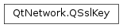

QSslKey¶
Synopsis¶
Detailed Description¶
The
PySide2.QtNetwork.QSslKeyclass provides an interface for private and public keys.
PySide2.QtNetwork.QSslKeyprovides a simple API for managing keys.
-
class
PySide2.QtNetwork.QSslKey¶ -
class
PySide2.QtNetwork.QSslKey(device, algorithm[, format=QSsl.Pem[, type=QSsl.PrivateKey[, passPhrase=QByteArray()]]]) -
class
PySide2.QtNetwork.QSslKey(handle[, type=QSsl.PrivateKey]) -
class
PySide2.QtNetwork.QSslKey(encoded, algorithm[, format=QSsl.Pem[, type=QSsl.PrivateKey[, passPhrase=QByteArray()]]]) -
class
PySide2.QtNetwork.QSslKey(other) Parameters: - format –
PySide2.QtNetwork.QSsl.EncodingFormat - device –
PySide2.QtCore.QIODevice - encoded –
PySide2.QtCore.QByteArray - type –
PySide2.QtNetwork.QSsl.KeyType - passPhrase –
PySide2.QtCore.QByteArray - other –
PySide2.QtNetwork.QSslKey - algorithm –
PySide2.QtNetwork.QSsl.KeyAlgorithm - handle –
PySide2.QtCore.Qt::HANDLE
Constructs a null key.
See also
Constructs a
PySide2.QtNetwork.QSslKeyby reading and decoding data from adeviceusing a specifiedalgorithmandencodingformat.typespecifies whether the key is public or private.If the key is encoded as PEM and encrypted,
passPhraseis used to decrypt it.After construction, use
PySide2.QtNetwork.QSslKey.isNull()to check ifdeviceprovided a valid key.Constructs a
PySide2.QtNetwork.QSslKeyfrom a valid native keyhandle.typespecifies whether the key is public or private.PySide2.QtNetwork.QSslKeywill take ownership for this key and you must not free the key using the native library.Constructs a
PySide2.QtNetwork.QSslKeyby decoding the string in the byte arrayencodedusing a specifiedalgorithmandencodingformat.typespecifies whether the key is public or private.If the key is encoded as PEM and encrypted,
passPhraseis used to decrypt it.After construction, use
PySide2.QtNetwork.QSslKey.isNull()to check ifencodedcontained a valid key.Constructs an identical copy of
other.- format –
-
PySide2.QtNetwork.QSslKey.algorithm()¶ Return type: PySide2.QtNetwork.QSsl.KeyAlgorithmReturns the key algorithm.
-
PySide2.QtNetwork.QSslKey.clear()¶ Clears the contents of this key, making it a null key.
See also
-
PySide2.QtNetwork.QSslKey.handle()¶ Return type: PySide2.QtCore.Qt::HANDLEReturns a pointer to the native key handle, if it is available; otherwise a null pointer is returned.
You can use this handle together with the native API to access extended information about the key.
Warning
Use of this function has a high probability of being non-portable, and its return value may vary across platforms, and between minor Qt releases.
-
PySide2.QtNetwork.QSslKey.isNull()¶ Return type: PySide2.QtCore.boolReturns
trueif this is a null key; otherwise false.See also
-
PySide2.QtNetwork.QSslKey.length()¶ Return type: PySide2.QtCore.intReturns the length of the key in bits, or -1 if the key is null.
-
PySide2.QtNetwork.QSslKey.__ne__(key)¶ Parameters: key – PySide2.QtNetwork.QSslKeyReturn type: PySide2.QtCore.boolReturns
trueif this key is not equal to keyother; otherwise returnsfalse.
-
PySide2.QtNetwork.QSslKey.__eq__(key)¶ Parameters: key – PySide2.QtNetwork.QSslKeyReturn type: PySide2.QtCore.boolReturns
trueif this key is equal toother; otherwise returnsfalse.
-
PySide2.QtNetwork.QSslKey.swap(other)¶ Parameters: other – PySide2.QtNetwork.QSslKeySwaps this ssl key with
other. This function is very fast and never fails.
-
PySide2.QtNetwork.QSslKey.toDer([passPhrase=QByteArray()])¶ Parameters: passPhrase – PySide2.QtCore.QByteArrayReturn type: PySide2.QtCore.QByteArrayReturns the key in DER encoding.
The
passPhraseargument should be omitted as DER cannot be encrypted. It will be removed in a future version of Qt.
-
PySide2.QtNetwork.QSslKey.toPem([passPhrase=QByteArray()])¶ Parameters: passPhrase – PySide2.QtCore.QByteArrayReturn type: PySide2.QtCore.QByteArrayReturns the key in PEM encoding. The result is encrypted with
passPhraseif the key is a private key andpassPhraseis non-empty.
-
PySide2.QtNetwork.QSslKey.type()¶ Return type: PySide2.QtNetwork.QSsl.KeyTypeReturns the type of the key (i.e., PublicKey or PrivateKey).
© 2018 The Qt Company Ltd. Documentation contributions included herein are the copyrights of their respective owners. The documentation provided herein is licensed under the terms of the GNU Free Documentation License version 1.3 as published by the Free Software Foundation. Qt and respective logos are trademarks of The Qt Company Ltd. in Finland and/or other countries worldwide. All other trademarks are property of their respective owners.